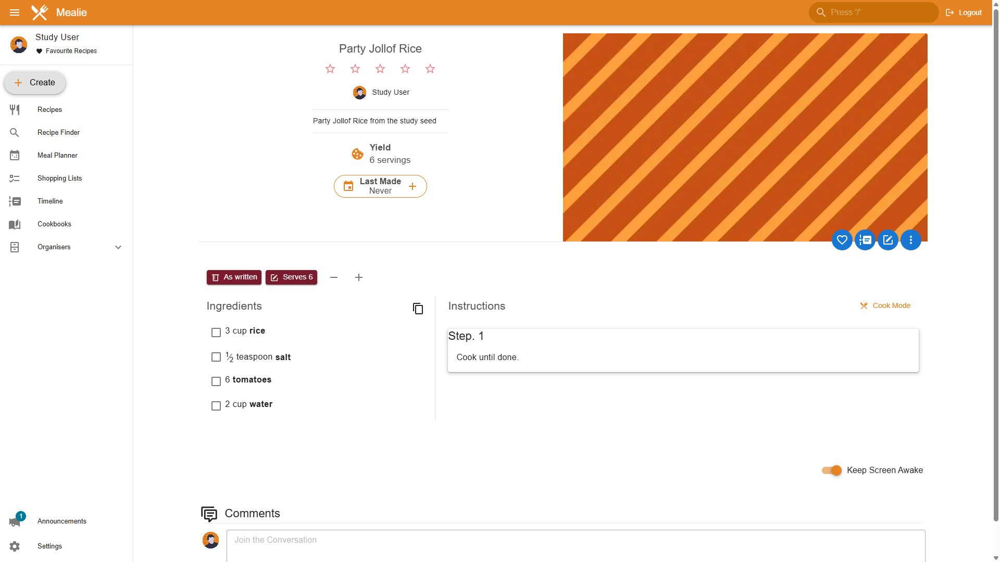
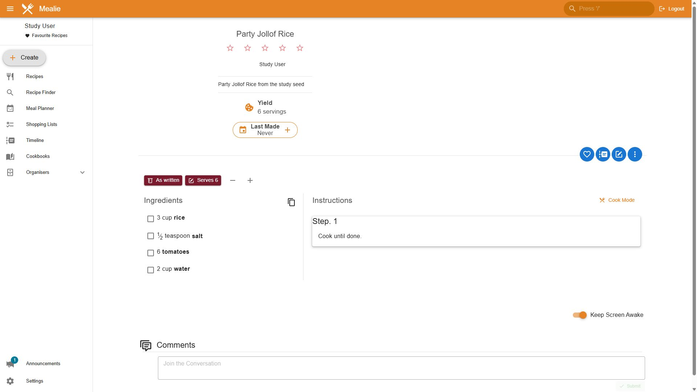
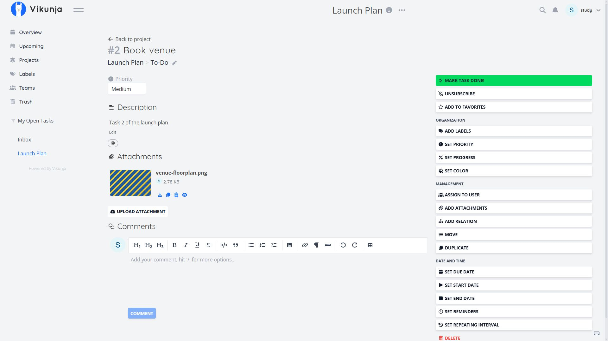

Kane's own screenshots, from its evidence packs
Every row came back. This did not.
Each pair is the same check, run by Kane CLI on the live app and on a copy restored from a common "dump the database" backup. Row counts matched on every table in both cases. Screenshots are the assertion step of each Kane run, copied unedited from the evidence pack.
Mealie: the recipe photo
Mealie 3.31 with Postgres. Same recipe, same servings, same ingredients. All 70 tables matched.


Vikunja: the task attachment
Vikunja 2.8 with Postgres. The attachment row came back, so the file is still listed. All 43 tables matched.


All cases and runs: proof page.